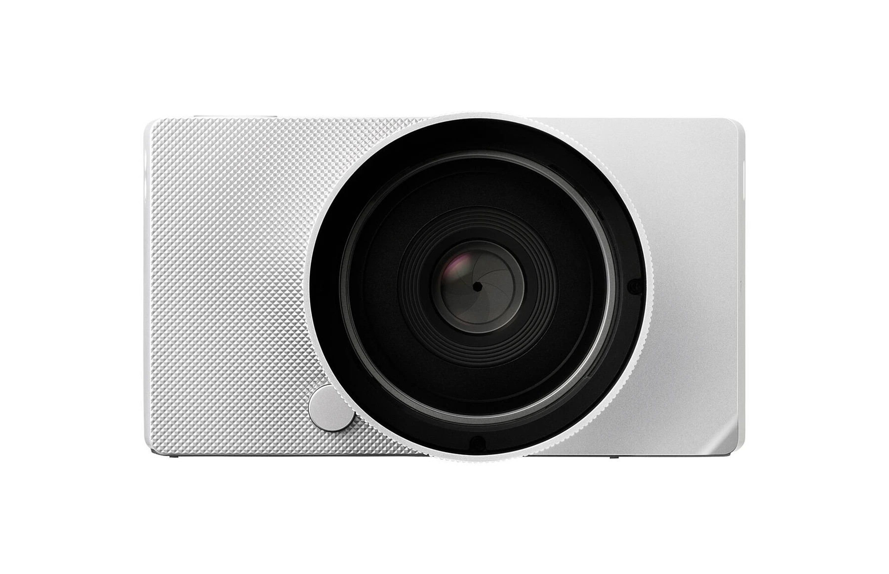

Skip to content
Home
Notes
Photography
Writing
About

Finding M
摇摇晃晃的象棋
A wobbly game of chess
Notes · Personal essay
黑白相机
A black-and-white camera
Notes · Personal essay
A quiet geometry
Photography
×